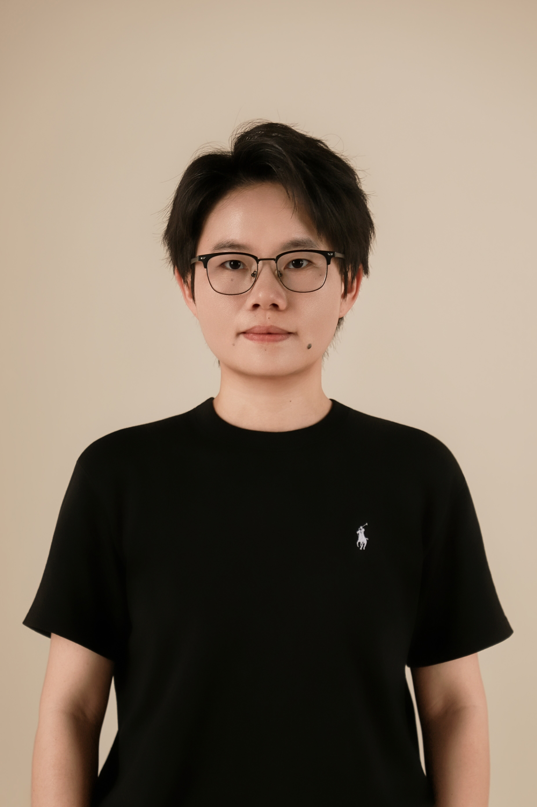
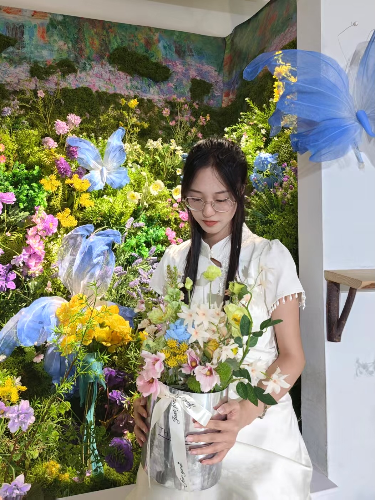
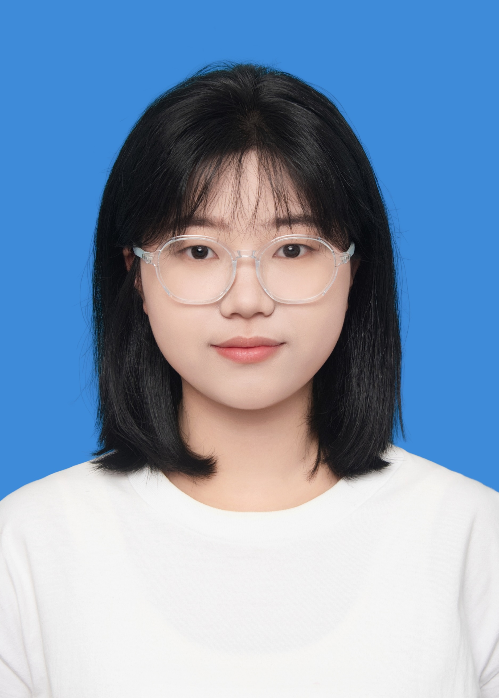
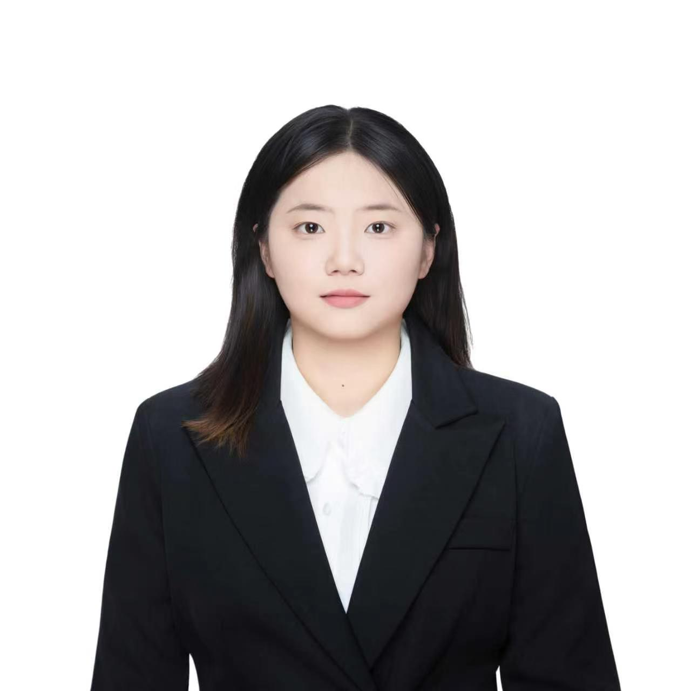

People

Principal Investigator
PI and Professor
School of Life Sciences, Zhejiang Chinese Medical University
Yating is a plant systems biologist interested in how plants reorganize their genomes and gene regulatory networks to meet new environments, and in how those molecular logics can inform plant evolutionary biology and the improvement of medicinal crops.
She received her Ph.D. from Zhejiang University, with part of her doctoral training carried out at Iowa State University in the Wendel Lab, co-mentored by Dr. Guanjing Hu. There she studied how the duplicated genomes of allopolyploid cotton coordinate their expression under salinity stress, asking how regulatory rewiring after polyploidization shapes adaptive traits. She subsequently joined the Urano Lab at Temasek Life Sciences Laboratory, Singapore, as a postdoctoral researcher, where she worked on nutrient signaling and gene regulatory evolution in the liverwort Marchantia polymorpha, a window into the regulatory innovations that accompanied the colonization of land by plants.
In 2025, she returned to China to establish the Dong Lab at Zhejiang Chinese Medical University. The lab continues her work on adaptive evolution in model and crop plants, while also opening new directions in the evo-devo and sustainable production of medicinal species. Across all of these, the underlying interest is the same. How do plants encode adaptation at the molecular level, and how can that understanding be put to use?
Google Scholar · ORCID · Email
Current members

Jiahui Shi
M.Sc. student · Incoming Sept 2026
Jie Lyu
M.Sc. student · Incoming Sept 2026

Qiyang Wang
Undergraduate

Xinran Li
Undergraduate
Xiyuan Lin
Undergraduate
Yitong Ye
Undergraduate
Jiayu Zhai
Undergraduate